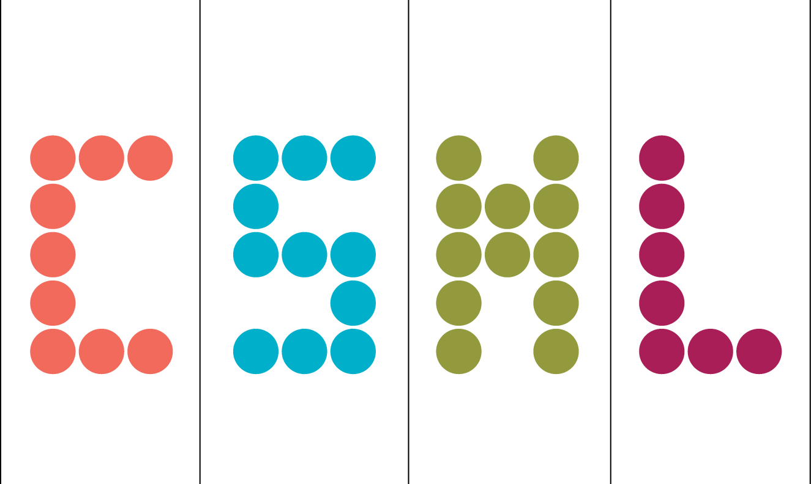

The London Meeting on Computational Statistics 2026 is a two-day workshop that will bring together researchers at the forefront of computational statistics to discuss recent advances in the field. A broad range of topics will be covered, with a focus on the intersection of computational statistics and machine learning. Examples of topics include (but are not limited to):
- Monte Carlo methods
- Gradient flows
- Simulation-based inference
- Variational inference
The workshop is scheduled alongside the UCL Institute of Mathematics and Statistical Sciences (IMSS) Annual Lecture, which will take place on 27 April 2026 and will feature Dr Lester Mackey as the keynote speaker.
Invited Speakers
-

Arnaud Doucet
University of Oxford
-

Sarah Filippi
Imperial College London
-

Mathieu Gerber
University of Bristol
-

Heishiro Kanagawa
Fujitsu Research
-
Amanda Lenzi
University of Edinburgh
-

Gilles Louppe
University of Liège
-

Arina Odnoblyudova
University College London
-

Dennis Prangle
University of Bristol
-

Marina Riabiz
King's College London
Registration, Talks and Posters
Registration
Registration period is now closed.
Contributed talks & posters
Submission period is now closed.
Schedule
Tuesday, April 28th 2026
| 9:00–9:30 | Registration |
| 9:30–9:45 | 👋 Welcome from the organisers |
| 9:45–10:15 | Title: Adaptive model size in Gaussian processes for continual learning
Sarah Filippi (Imperial College London) [show abstract]
Many machine learning models require fixing their capacity before training, such as the number of neurons in a neural network or inducing points in a Gaussian process. Increasing capacity typically improves performance until the available information in the data is captured, after which computational costs continue to grow without benefit. This raises the question: how big is big enough? In this talk, I address this problem for Gaussian processes in continual learning, where data arrives incrementally and the final dataset size is unknown in advance. In this setting, standard heuristics for choosing a fixed model size are unavailable. I present a method that automatically adapts model capacity online, achieving near-optimal predictive performance while avoiding unnecessary computation. All hyperparameters are set without access to dataset properties, and experiments across diverse datasets show that the method performs robustly with substantially less tuning than existing approaches. I will also briefly discuss related issues in scaling Gaussian processes with stochastic optimization, showing how minibatch-induced gradient noise can slow convergence in sparse variational models, and outlining a variance-reduction approach that accelerates training without full-batch computations.
|
| 10:15–10:45 | Title: Saddlepoint Monte Carlo and its Application to Exact Ecological Inference
Robin Ryder [show abstract]
Assuming X is a random vector and A a non-invertible matrix, one sometimes need to perform inference while only having access to samples of Y = AX. The corresponding likelihood is typically intractable. One may still be able to perform exact Bayesian inference using a pseudo-marginal sampler, but this requires an unbiased estimator of the intractable likelihood. We propose saddlepoint Monte Carlo, a method for obtaining an unbiased estimate of the density of Y with very low variance, for any model belonging to an exponential family. Our method relies on importance sampling of the characteristic function, with insights brought by the standard saddlepoint approximation scheme with exponential tilting. We show that saddlepoint Monte Carlo makes it possible to perform exact inference on particularly challenging problems and datasets. We focus on the ecological inference problem, where one observes only aggregates at a fine level. We present in particular a study of the carryover of votes between the two rounds of various French elections, using the finest available data (number of votes for each candidate in about 60,000 polling stations over most of the French territory). We show that existing, popular approximate methods for ecological inference can lead to substantial bias, which saddlepoint Monte Carlo is immune from. We also present original results for the 2024 legislative elections on political centre-to-left and left-to-centre conversion rates when the far-right is present in the second round.
|
| 10:45–11:30 | ☕ Coffee break |
| 11:30–12:00 | Title: Minimum distance summaries for robust neural posterior estimation
Dennis Prangle (University of Bristol) [show abstract]
Neural posterior estimation enables approximate Bayesian inference using conditional density estimation from simulated prior-data pairs, typically reducing the data to low-dimensional summary statistics. NPE is susceptible to misspecification when observations deviate from the training distribution. We introduce minimum-distance summaries, a plug-in robust NPE method that adapts queried test-time summaries independently of the pretrained NPE. Leveraging the maximum mean discrepancy (MMD) as a distance between observed data and a summary-conditional predictive distribution, the adapted summary inherits strong robustness properties from the MMD. We demonstrate that the algorithm can be implemented efficiently with random Fourier feature approximations, yielding a lightweight, model-free test-time adaptation procedure. We provide theoretical guarantees for the robustness and consistency of our algorithm and empirically evaluate it on a range of synthetic and real-world tasks, demonstrating substantial robustness gains with minimal additional overhead.
|
| 12:00–12:30 | Title: TBA
Kimia Nadjahi [show abstract]
TBA
|
| 12:30–13:45 | 🥗 Lunch |
| 13:45–14:15 | Title: Convergence of a class of gradient-free optimisation schemes when the objective function is noisy, irregular, or both
Mathieu Gerber (University of Bristol) [show abstract]
We investigate the convergence properties of a class of iterative algorithms designed to minimize a potentially non-smooth and noisy objective function, which may be algebraically intractable andwhose values may be obtained as the output of a black box. The algorithms considered can be cast under the umbrella of a generalised gradient descent recursion, where the gradient is that of a smooth approximation of the objective function. The framework we develop includes as special cases model-based and mollification methods, two classical approaches to zero-th order optimisation. The convergence results are obtained under very weak assumptions on the regularity of the objective function and involve a trade-off between the degree of smoothing and size of the steps taken in the parameter updates. As expected, additional assumptions are required in the stochastic case. We illustrate the relevance of these algorithms and our convergence results through a challenging classification example from machine learning.
|
| 14:15–14:45 | Title: TBA
Marina Riabiz (King's College London) [show abstract]
TBA
|
| 14:45–15:30 | ☕ Coffee break |
| 15:30–16:00 | Title: Beyond Uncertainty Sets: Leveraging Optimal Transport to Extend Conformal Predictive Distribution to Multivariate Settings
Eugene Ndiaye [show abstract]
Conformal prediction (CP) constructs uncertainty sets for model outputs with finite-sample coverage guarantees, all without distributional assumptions other than exchangeability. A candidate output is included in the prediction set if its non-conformity score is not considered extreme relative to the scores observed on a set of calibration examples. However, this procedure is only straightforward when scores are scalar-valued, which has limited CP to real-valued scores or ad-hoc reductions to one dimension. This limitation is critical, as vector-valued scores arise naturally in important settings such as multi-output regression or situations involving model aggregation, where each predictor in an ensemble provides its own score. % The problem of ordering vectors has been studied via optimal transport (OT), which provides a principled method for defining vector-ranks and (center-outward) multivariate quantile regions, though typically with only asymptotic coverage guarantees. Specifically, this loss of validity occurs because applying a single, fixed transport map, learned from finite data, to new test points introduces an uncontrolled approximation error. We restore finite-sample, distribution-free coverage by conformalizing the vector-valued OT quantile region. In our approach, a candidate's rank is defined via a transport map computed for the calibration scores augmented with that candidate's score—a step crucial for preserving validity. This defines a continuum of OT problems (one for each candidate) which appears computationally infeasible. However, we prove that the resulting optimal assignment is piecewise-constant across a fixed polyhedral partition of the score space. This allows us to characterize the entire prediction set tractably and, crucially, provides the machinery to address a deeper limitation of prediction sets: that they only indicate which outcomes are plausible, but not their relative likelihood. % In one dimension, conformal predictive distributions (CPDs) fill this gap by producing a predictive distribution with finite-sample calibration. Extending CPDs beyond one dimension remained an open problem. We construct, to our knowledge, the first multivariate CPDs with finite-sample calibration, i.e., they define a valid multivariate (center-outward) distribution where any derived uncertainty region automatically has guaranteed (conformal) coverage. We present both conservative and exact randomized versions, the latter resulting in a multivariate generalization of the classical Dempster-Hill procedure.
|
| 16:00–16:30 | Title: Asymptotically optimal self-normalized importance sampling driven by MCMC
Nicola Branchini [show abstract]
We propose and study a class of methods to estimate expectations of generic test functions using an adaptive version of self-normalized importance sampling (SNIS). The proposed approach is motivated by a particular combination of Markov Chain Monte Carlo (MCMC) and importance sampling (IS) that also takes the test function into account. Within the adaptive IS (AIS) literature, the approach marks the first sampler that explicitly targets the (asymptotically) ``optimal proposal'' for SNIS, and does not restrict the proposal to a parametric family. Within the rich literature on MCMC-IS methods, the approach distinguishes itself by building a proposal that depends on the test function. We discuss connections with other frameworks such as ratio IS, bridge sampling and stochastic approximation. We prove asymptotic properties of the proposed approach, including a martingale central limit theorem and a certain notion of asymptotic optimality of AIS inspired by \citep{portier2018asymptotic}. Our experiments suggest that it is possible to approximate the optimal SNIS proposal well and that it can significantly outperform direct MCMC on the target distribution in comparable settings.
|
Wednesday, April 29th 2026
| 9:00–9:30 | ☕ Morning coffee |
| 9:30–10:00 | Title: Amortised Bayesian inference for structured statistical models
Amanda Lenzi [show abstract]
Amortised and simulation-based approaches provide flexible tools for Bayesian inference in models with intractable or computationally demanding likelihoods. Most modern methods aim to approximate the full joint posterior distribution using highly expressive neural architectures. However, in many statistical settings, inference focuses on low-dimensional structural parameters, and accurate marginal posteriors may suffice. In this talk, I present a structured variational framework that directly approximates marginal posterior distributions via amortised neural networks under Gaussian assumptions. This approach avoids learning a full joint posterior and can lead to stable and computationally efficient inference in structured statistical models. I illustrate the methodology in a spatial modelling context and discuss its statistical properties and practical performance. I conclude by outlining broader questions about when marginal amortisation is appropriate, how posterior dependence affects approximation quality, and what challenges arise when extending these ideas to models with stronger latent structure.
|
| 10:00–10:30 | Title: Scaling-up simulation-based inference with diffusion models
Gilles Louppe (University of Liège) [show abstract]
Deep generative models are transforming how we solve some of science's hardest puzzles: inverse problems where we must work backwards from noisy, incomplete observations to uncover hidden physical states. In this talk, we will explore three scales of application, from characterizing the atmospheres of distant exoplanets light years away, to reconstructing turbulent fluid dynamics from sparse measurements, to assimilating satellite data across the entire Earth's atmosphere in real time. We will see how normalizing flows, score based diffusion models, and latent space compression allow us to tackle problems spanning tens to billions of variables, revealing not just single solutions but entire distributions of physically plausible states.
|
| 10:30–11:15 | ☕ Coffee break |
| 11:15–11:45 | Title: Self-speculative masked diffusions
Arnaud Doucet (University of Oxford) [show abstract]
We present self-speculative masked diffusions, a new class of masked diffusion generative models for discrete data that require significantly fewer function evaluations to generate samples. Standard masked diffusion models predict factorized logits over currently masked positions. A number of masked positions are then sampled; however, the factorization approximation means that sampling too many positions in one go leads to poor sample quality. As a result, many simulation steps and therefore neural network function evaluations are required to generate high-quality data. We reduce the computational burden by generating non-factorized predictions over masked positions. This is achieved by modifying the final transformer attention mask from non-causal to causal, enabling draft token generation and parallel validation via a novel, model-integrated speculative sampling mechanism. This results in a non-factorized predictive distribution over masked positions in a single forward pass. We find that we can achieve a ~2x reduction in the required number of network forward passes relative to standard masked diffusion models.
|
| 11:45–12:15 | Title: A computable measure of suboptimality for entropy-regularised variational objectives
Heishiro Kanagawa (Fujitsu Research) [show abstract]
Several emerging post-Bayesian methods target a probability distribution for which an entropy-regularised variational objective is minimised. This increased flexibility introduces a computational challenge, as one loses access to an explicit unnormalised density for the target. To mitigate this difficulty, we introduce a novel measure of suboptimality called gradient discrepancy, and in particular a kernel gradient discrepancy (KGD) that can be explicitly computed. In the standard Bayesian context, KGD coincides with the kernel Stein discrepancy (KSD), and we obtain a novel characterisation of KSD as measuring the size of a variational gradient. Outside this familiar setting, KGD enables novel sampling algorithms to be developed and compared, even when unnormalised densities cannot be obtained.
|
| 12:15–13:15 | 🥗 Lunch |
| 13:15–14:15 | 🪧 Poster session |
| 14:15–14:45 | Title: A computationally-tractable measure of global sensitivity for Bayesian inference
Arina Odnoblyudova (University College London) [show abstract]
Bayesian inference should ideally not be overly sensitive to the choice of prior or hyperparameters, but even defining and measuring this sensitivity is challenging. Existing global sensitivity measures typically involve significant trade-offs between strength of the measure, interpretability, and computational tractability. Unfortunately, most methods are unable to serve the needs of modern Bayesian inference due to their high computational cost and poor performance in multiple dimensions. To address these limitations, we introduce a new approach to global sensitivity analysis which only requires a set of samples from a reference posterior and the ability to evaluate score functions, making it broadly computationally tractable. We demonstrate our proposed method on challenging Bayesian inference problems which are practically out of reach of existing approaches, including Bayesian inference for heavy-tailed time series, simulation-based inference for problems in telecommunications engineering, and generalised Bayesian inference for doubly-intractable models.
|
| 14:45–15:30 | ☕ Coffee break |
| 15:30–16:00 | Title: Robust Bayesian Optimisation with Unbounded Corruptions
Abdelhamid Ezzerg [show abstract]
Bayesian Optimization is critically vulnerable to extreme outliers. Existing provably robust methods typically assume a bounded cumulative corruption budget, which makes them defenseless against even a single corruption of sufficient magnitude. To address this, we introduce a new adversary whose budget is only bounded in the frequency of corruptions, not in their magnitude. We then derive RCGP-UCB, an algorithm coupling the famous upper confidence bound (UCB) approach with a Robust Conjugate Gaussian Process (RCGP). We present stable and adaptive versions of RCGP-UCB, and prove that they achieve sublinear regret in the presence of up to O(T^{1/4}) and O(T^{1/7}) corruptions with possibly infinite magnitude. This robustness comes at near zero cost: without outliers, RCGP-UCB's regret bounds match those of the standard GP-UCB algorithm.
|
| 16:00–16:30 | Title: Computing importance weights for Markov chain Monte Carlo via couplings: an application to f-divergence diagnostics
Adrien Corenflos [show abstract]
A long-standing gap exists between the theoretical analysis of Markov chain Monte Carlo convergence, which is often based on statistical divergences, and the diagnostics used in practice. We introduce the first general convergence diagnostics for Markov chain Monte Carlo based on any f-divergence, allowing users to directly monitor, among others, the Kullback-Leibler and the χ-square divergences as well as the Hellinger and the total variation distances. Our first key contribution is a coupling-based "weight harmonization" scheme that produces a direct, computable, and consistent weighting of interacting Markov chains with respect to their target distribution. The second key contribution is to show how such consistent weightings of empirical measures can be used to provide upper bounds to f-divergences in general. We prove that these bounds are guaranteed to tighten over time and converge to zero as the chains approach stationarity, providing a concrete diagnostic.
|
| 16:30–16:45 | 👋 Closing remarks |
Organisers
To learn more about our organisers, see the FSML research group webpage!
-
Harita Dellaporta
Lead organiser
-

François-Xavier Briol
Co-organiser
-
Zonghao (Hudson) Chen
Co-organiser
-
William Laplante
Co-organiser
Acknowledgements
This workshop was supported financially through the EPSRC grant "Transfer Learning for Monte Carlo Methods" (EP/Y022300/1) and the UCL department of Statistical Science's section on Computational Statistics and Machine Learning. The organisers are also particularly grateful to the ELLIS Unit London at UCL (co-organisers) and the Royal Statistical Society's section on Computational Statistics and Machine Learning for supporting this event.

Location
The workshop will be hosted at the London Mathematical Society in Central London.
The address is De Morgan House, 57-58 Russell Sq, London WC1B 4HS.